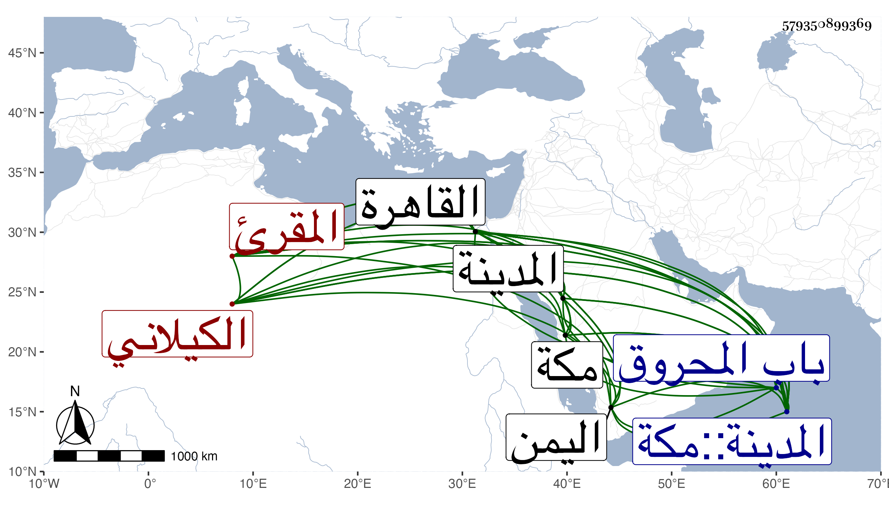

0902Sakhawi.DawLamic.ITO20230111-ara1.EIS1600.579350899369
Biography ID: 579350899369
267
محمد بن أبي يزيد بن محمد بن أبي يزيد الشمس أبو عبد الله الكيلاني المقرئ نزيل الحرمين ووجدت في موضع تسمية أبيه محمدا . أخذ القراآت عن ابن الجزري وغيره وتميز فيها ودخل مع ابن الجزري اليمن وكان يتضجر منه أحيانا . قاله العفيف الناشري في أثناء ترجمة ، وتصدى للإقراء بالحرمين دهرا فأخذ عنه جماعة ممن تلا عليه بمكة الحسان بن حريز والقاضي عبد القادر المالكي وعلي والشهاب الديروطيان وعمر النجار وعبد الأول المرشدي وبالمدينة ابن شرف الدين ، وقدم القاهرة بعيد الخمسين ومات فيها بالبيمارستان غريبا في يوم الأربعاء ثالث عشر ربيع الآخر سنة ثلاث وخمسين ودفن بقرب تربة الطويل بصحراء باب المحروق ، وكان متعبدا متجردا إلا من كتب حسنة انتقل بها معه إلى القاهرة وساءت أخلاقه فيما بلغني مدة وانقطع عن الإقراء ويقال أنه كان يعين في مناكدة أبي الفتح المراغي مع أهل رباط ربيع رحمه الله وإيانا وعفا عنه .
